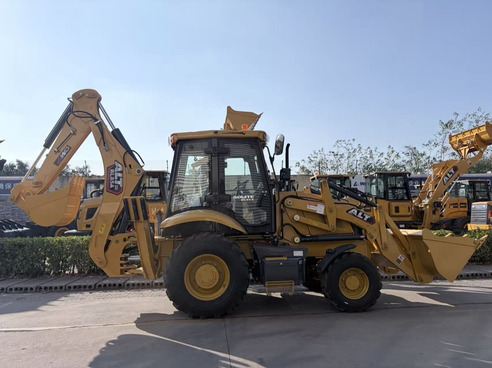
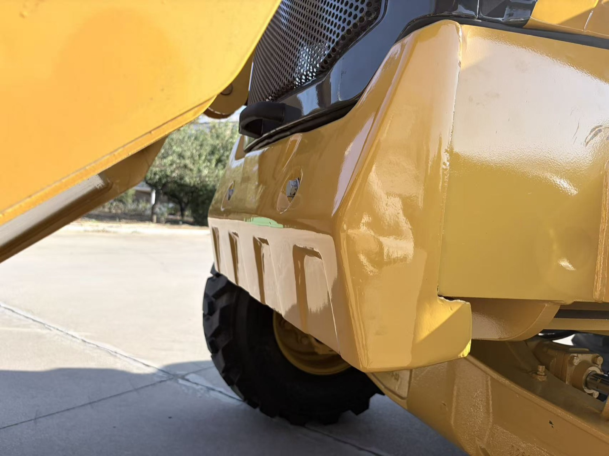
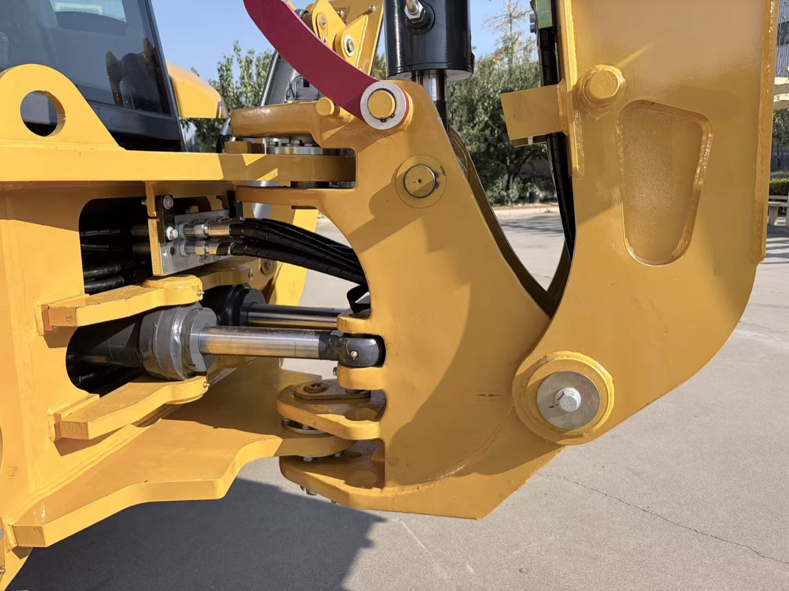
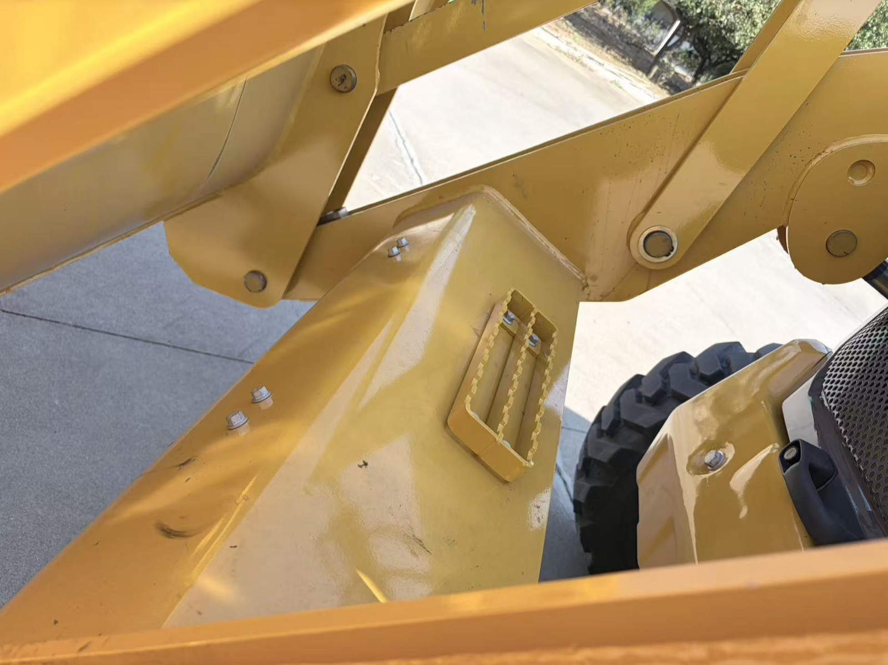
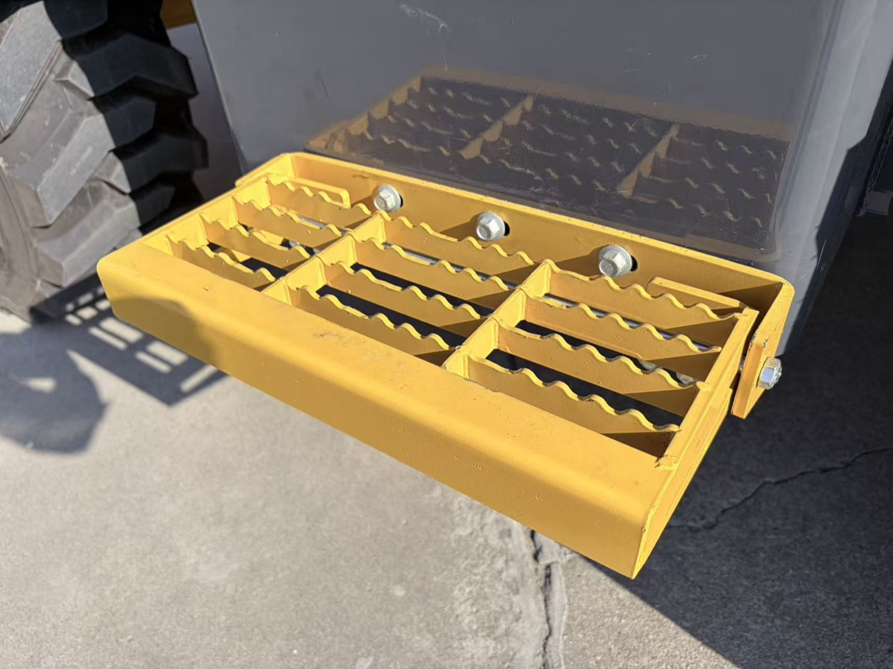

The BL85-25 in the yard before dispatch. At 8,500 kg operating weight it sits exactly between our BL80-25 and BL90-25 — but four build details below are what actually make it a different machine.
Why We Built a BL85 at All
A fair question, because on paper the gap looks small. The BL80-25 weighs 8,000 kg and carries a 1.0 m³ front bucket. The BL85-25 weighs 8,500 kg, carries 2,500 kg, and digs with a 1.2 m³ front bucket down to 3,800 mm. That is a half-ton step, not a revolution.
But the requests that shaped this machine did not come from a spreadsheet. They came from three years of conversations: rental companies who wanted more front-lift capacity without jumping to a 9-ton machine and its transport costs; owners who looked under a BL80 and asked why the swing frame was welded; operators who checked hydraulic oil every morning from a step that was not really designed for standing on; and — the one that came up most — customers calculating freight who asked us to make the machine easier to load into a container.
So the BL85-25 is not a BL80 with a bigger number stamped on it. Four things are physically different in the steel. Let me walk you through them one at a time, including what each one costs us to build, because I think you deserve to know why a machine is the way it is before you wire money for it.
Change One — Added Lead Counterweight in the Front Ballast

The front ballast section of the BL85-25. Inside this cast housing sits added lead counterweight — dense, compact, and placed as low and far forward as the chassis allows.
A backhoe loader lives a double life, and the two lives fight each other. When it digs with the rear bucket, the machine pivots over the rear axle and the front end goes light. When it loads with the front bucket, the reverse happens — and if the front ballast is not enough, the machine runs out of traction and lift capacity exactly at the moment the bucket is fullest. You feel it as a loader that squats, wheels spinning, doing 80% of the job it should.
The blunt fix is more weight. The clever fix is denser weight. Lead is roughly 1.4 times denser than cast iron, which means we can add meaningful ballast to the front section without growing it outward — no wider machine, no more weight hanging where it hurts steering, and the extra mass sits low, where it helps stability instead of raising the center of gravity.
What this means in practice: the front end stays planted with a heaped 1.2 m³ bucket, and the machine keeps more of its rear-dig stability too, because the ballast is positioned as a counterbalance rather than bolted on as an afterthought. If your work is more loader than backhoe — stockpiling, loading trucks, moving aggregate — this is the change you will feel on the first morning.
Change Two — a Cast Slewing Support Where the Backhoe Swings

The cast slewing support on the BL85-25. This is the component the entire backhoe digs, lifts, and swings against — now produced as a casting rather than a weldment.
Stand behind a backhoe loader while it works and you will notice something: the backhoe half of the machine does its job by hammering. Every dig cycle drives the bucket into the ground, loads the boom, lifts a full spoil pile, swings it 90 degrees, and dumps. Thousands of times a day. All of that force passes through one component — the slewing support, the frame that connects the rotating upper backhoe structure to the chassis.
On our smaller machines this part has traditionally been fabricated — steel plate, cut and welded. Fabrication is fine when it is done well and stays within its limits. But a weld is a line where two pieces of steel become one, and a line is where stress concentrates. On machines that dig in hard ground, day after day, the weldment is the component our service records flagged most often.
The BL85-25's slewing support is cast in one piece. Casting does something a weld never can: the metal's grain flows continuously through the complex curves of the part, with no seams. The casting also lets us put material exactly where loads travel — thick around the kingpost, tapered where forces bend — instead of thick wherever a plate happens to be. Machined bearing seats come out more accurate, which means less play in the swing when the part is new and less wear growing into it over the years.
Honest trade-off: a casting costs more to produce than a weldment, and the tooling is a real investment. We made it because this is the component that decides whether the backhoe half of your machine still feels tight in year six. If your operators dig in rock, laterite, or compacted clay, this is the change I would point to first.
Change Three — the BL90 Inspection Step on the Loader Boom

The inspection step welded into the top of the loader boom — the same fitting our BL90-25 carries. It gives a safe, non-slip footing for daily checks and cleaning.
This one sounds trivial and is not. Every operator you have does the same thing every morning: climbs somewhere on the machine to check fluids, wipe the lights, clear debris from the engine bay, and look over the boom and hoses. On machines without a proper step, they climb what is available. What is available is usually a smooth, curved, painted boom arm — which is exactly as dangerous as it sounds, especially at 5:30 in the morning with dew on it.
The BL85-25 carries the same welded grated inspection step as our BL90-25 — a serrated, self-draining platform set into the top of the front loader boom, bolted rather than merely tack-welded so it can be replaced if a foot ever bends it. It puts a stable footing exactly where operators were already putting their boots.
I like this change because of what it says about how the machine was specified. Maintenance access is the kind of thing nobody asks for on a quote sheet and everybody uses daily. A factory that spends money on a step is thinking about the person who will run the machine for the next ten years, not just the person who will sign for it.
Change Four — a Boarding Step That Folds Flat

The boarding step in its folded position, flat against the counterweight. Folded, the machine presents a clean side profile for container loading; unfolded, it is a proper stair for the cab.
The fourth change answers the question I get asked more than any other in the quote stage: how do these machines ship? A backhoe loader is a tall, wide, awkward thing to put in a box, and every centimeter of protruding hardware is a centimeter of your freight money spent on air.
Fixed boarding steps are a perfect example. They stick out. They are the first thing lashing crews work around, and the first thing that arrives bent. On the BL85-25, the cab boarding step folds flat against the counterweight — one motion, no tools. Folded, the machine presents a clean, flush side for loading and lashing. Unfolded, it is a full-width stair with serrated treads, which is a genuinely safer way to climb into a cab than the single narrow step most machines in this class offer.
And it is not only about containers. The same fold helps every owner who parks the machine in a tight yard against a wall, in a workshop bay, or behind a gate. Folding it takes three seconds. Everything that sticks out less, breaks less — and ships cheaper.
The container connection: these details add up to a practical number — two BL85-25 units fit in one 40 ft high-cube container, booms positioned, machines lashed, step folded. You can read how a full backhoe loader shipment is prepared in my article on shipping a backhoe loader from China. Freight is a large share of your landed cost; a machine designed to load well is quietly worth money every single shipment.
What Has Not Changed
Just as important, here is what we did not touch on the BL85-25, because the BL80 formula was already right:
- The engine. Still the Weichai WP4G100E220, 73 kW — a mechanically simple, widely serviced engine that mechanics from Peru to Papua New Guinea already know.
- The transmission layout. Same torque converter and powershift arrangement as the rest of the BL range, so a workshop that has serviced one machine recognizes all of them.
- The controls. Same pilot joystick operation. A crew moving from a BL80-25 to a BL85-25 needs about ten minutes of familiarization.
- The parts book. Filters, hoses, seals, pins, and bushings for the shared systems are the same part numbers as the BL80-25. If you already stock for a BL80, you are most of the way stocked for a BL85.
And to be clear about what these four changes are not: they are not a "premium trim." There is no BL85 configuration without them. They are simply how we now build the machine, in every unit, for every customer — because each one solves a failure mode we had watched often enough to stop tolerating.
Who the BL85-25 Fits — and Who It Does Not
Following the same honest matching I try to apply to every machine I sell: the BL85-25 is the right answer for a specific kind of buyer, and the wrong one for others.
It fits if: your work is meaningfully loader-heavy (the counterweight and the 1.2 m³ bucket earn their keep), your ground is hard enough that the cast slewing support will outlast a weldment by years, or you rent machines out and care about the small things — steps, access, parts commonality — that decide whether operators respect a fleet.
Think twice if: your jobs are light-duty, year-round soft soil — a BL80-25 does the same work and leaves money in your pocket; or if you need serious excavation productivity and full-time hydraulic performance, in which case the BL90-25 or the BL105-25 is the honest recommendation, not the machine in the middle.
The half-ton class exists because half a ton is exactly the difference between "fits under the bridge permit / the old truck / the small trailer" and "does not." If that constraint is real for you, nothing else in our range substitutes for this machine. If it is not, buy on the work, not on the number.
How to Check These Details Before You Pay
Whatever brand or factory you buy from, the four things in this article are all checkable from your desk. I would rather you know how to verify than trust me:
- Ask for dated photos, not catalogue renders. For the counterweight, ask for a photo of the front ballast area with the machine's serial plate visible in frame. For the casting, ask for the slewing support from two angles.
- Ask for a short video walking around the machine. Specifically: "show the boarding step folding and unfolding." A video call with the machine in front of the person holding the phone is even better — I do them daily.
- Weigh it. Ask for the actual weighing slip from the loading inspection. 8,500 kg is not a feeling; a counterweighed machine is a weighed machine.
- Compare the service parts list. If the seller claims parts commonality with the smaller model, ask for both parts books and check the filter and seal numbers yourself. Ten minutes, and it tells you more about the factory than any brochure.
- Book the pre-shipment inspection you actually want. Third-party inspectors in Qingzhou cost a few hundred dollars. If a factory resists your inspector, that tells you something too.
If you are comparing us against another factory, run this same list on them. It works regardless of whose badge is on the machine.
The Point of All This
Machines do not get better in announcements; they get better in specific, checkable changes made to real problems. The BL85-25's four changes — lead counterweight, cast slewing support, a real inspection step, a folding boarding step — each trace back to a complaint, a service record, or a freight calculation. None of them show up in a headline spec. All of them show up in year three.
Full specifications, more photos, and the complete parameter table are on the BL85-25 product page. And if you want to know whether this half-ton class is the right one for your market, that is exactly the kind of question I answer best in a conversation.
Is the BL85-25 the Right Machine for Your Market?
Tell me what your customers do with their machines — loading or digging, hard ground or soft, rent or own. I will tell you honestly whether this half-ton class fits, and if it does not, which machine does and why.
Talk to Vivian on WhatsApp